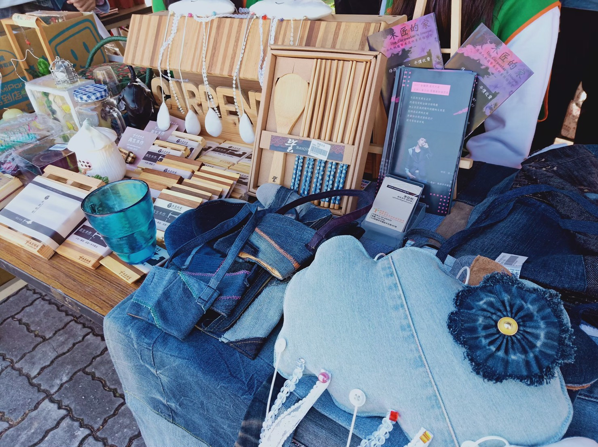
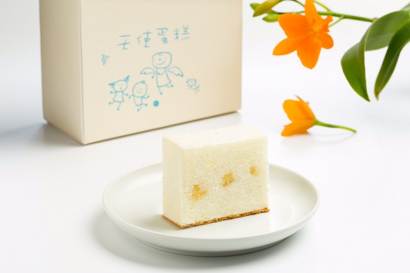

Personal Information
| お名前： | 劉昱辰 |
| 学校： | 中原大學資訊管理學系 |
| 誕生日： | 2000/01/28 |
| 携帯： | 0958277373 |
| メール： | aimerxfate@gmail.com |
【強く儚く咲いた花のように】
 |
Facebook |
 |
Instagram |
Personal Information
| お名前： | 劉昱辰 |
| 学校： | 中原大學資訊管理學系 |
| 誕生日： | 2000/01/28 |
| 携帯： | 0958277373 |
| メール： | aimerxfate@gmail.com |
【強く儚く咲いた花のように】
|
Facebook |
|
Instagram |
管理學 >>> 木匠的家
「我們最初的夢想，就是當你在人生路上迷失、感到徬徨，可以來到這裡；有人會為你泡一杯咖啡，聆聽你的心情…」
木匠的家成立於1999年，起初只是一間小小的咖啡館，提供免費咖啡茶飲、夏日電影院、英語自由談、跳蚤巿集等社區免費休閒活動，讓社區民眾能有一個自在休憩的場所。後來因著許多人捐二手物來支持我們的服務，在2004年我們便增設了一個公益二手店，以維修、販售民眾欲丟棄淘汰的傢俱及物品為主要財源，來協助中高齡及身障人士培訓工作技能，陪伴他們走過生活困境，使他們能自立更生，許多人也因此重獲新生，至今已提供了225名弱勢朋友工作機會，更輔導了將近百人重回職場就業。
企業管理 >>> 普仁基金會 X 天使蛋糕
買天使蛋糕做公益，傳遞溫暖到偏鄉。
買蛋糕做公益，讓微熱山丘天使蛋糕更有意義。
分享快樂 讓「天使蛋糕」傳遞溫暖微笑。
讓這份愛心隨時隨地都能傳遞溫暖微笑給需要幫助的偏鄉孩子。